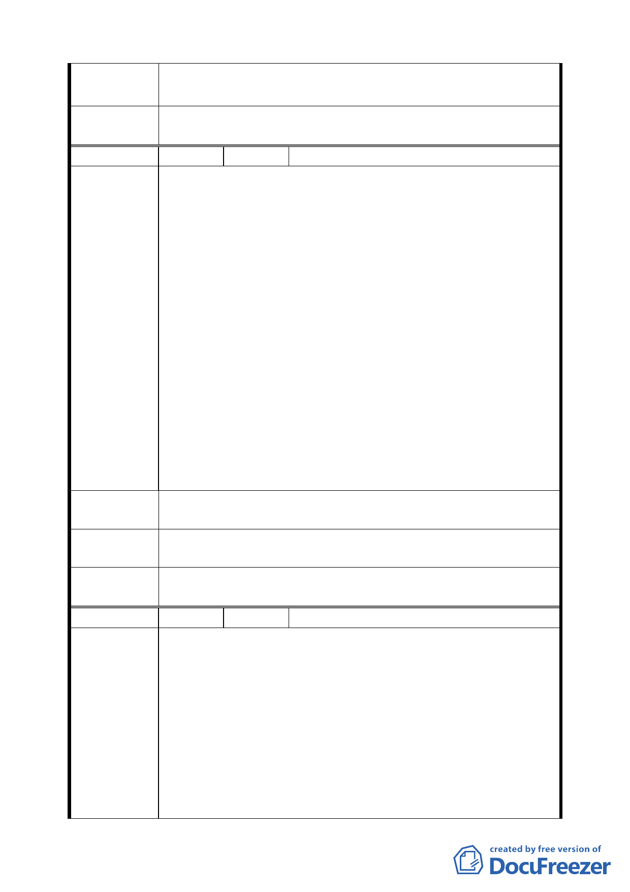

結 論 題，本案請發展局協同工務局查證私設巷道之相關套繪圖，
以尋求恢復通暢。
委員會議
決議
建議事項非關都市計畫問題，請發展局另案檢討。
編
號3
陳情人 陳守源
建議位置：北投區行義段四小段二五四~二五八地號
建議理由：
一、民國七十年五月公告發布實施之「變更台北市士林區北
投區都市計畫公共設施用地（通盤檢討）案」中將本地
區由保護區變更為公園，其中變更原因為「採納台北市
議會第三屆第四次臨時大會議員建議杜絕榮民總醫院後
側山坡葬以免影響病患心理損壞醫療效果並維護自然景
觀之需要增設公園用地並盡量利用公地劃設」。
陳 情 理 由 二、本地區再民國七十年劃為公園用地後，遲遲尚未開闢，
且亦不辦理徵收，以致土地所有權人尚未無法對私有之
財產能有所處分與充分利用，蒙受二十多年來無法計數
之損失。
三、本人曾於九十一年間向發展局提出陳情，獲發展局回函
（附件一）告知將「逐年編列預算徵收開闢之」，唯對徵
收的年限與方式卻未有任何明確答覆。
四、至此本案之土地所有權人對自己的私有土地何時能獲得
合理解決，乃是遙遙無期。
建議辦法
明訂「徵收日期」以昭公信，或將土地使用限制解編，還地
於民，以 讓土地所有權人能利用土地維持生計。
專 案 小 組 93.12.27 專案小組第十次審查會議：所提意見錄請權責單位
結 論 參卓。
委員會議
決議
同意依專案小組審查結論辦理。
編
號4
陳情人 高智明
建 議 位 置：榮一
建 議 理 由：
一、編號「榮一」案，前於民國八十九年八月二十一日至二
十六日「北投區都市計畫通盤檢討案」成果展示及座談
陳情理由
會之相關圖說（當時編號 PEA-4）以明確不列入「受臺北
市山坡地開發建築要點管制地區」在案。（如附件一及二）
二、近公展圖及細部計畫書「榮一」案內「相關規定及說明」
欄第三項之規定，卻與前項規定相異，另民等不得其解。
（如附件三）
三、今將公展圖及山坡地界樁（以下簡稱界樁）相關位置比
第 四五 頁，共 49 頁